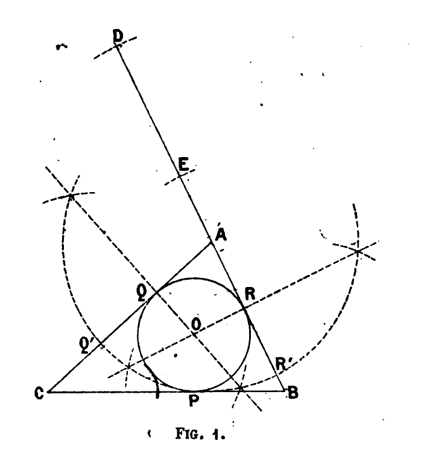

Problème XXVII : Inscrire un cercle dans un triangle donné ABC¶
XXVII. — Inscrire un cercle dans un triangle donné ABC.
Qu’il s’agisse d’un cercle inscrit ou d’un cercle ex-inscrit, la méthode classique par les bissectrices des angles du triangle conduit au symbole :
\(\mathrm{Op.} : (6R_1 + 3R_2 + 11C_1 + 10C_3)\) ; simplicité 30 ; exactitude 17 ; 3 droites, 10 cercles.
Si l’on voulait tracer les trois autres cercles tangents, on aurait en plus à ajouter : \(\mathrm{op.} : (12R_1 + 6R_2 + 16C_1 + 13C_3)\). En tout, par conséquent :
\(\mathrm{Op.} : (18R_1 + 9R_2 + 27C_1 + 23C_3)\) ; simplicité 77 ; exactitude 45 ; 18 droites, 23 cercles.
Voici une solution plus simple, mais qui ne se présenterait certes point à l’esprit si l’on ne dirigeait point l’attention vers la recherche systématique de la simplicité de la construction (fig. 1).


J’appelle P, Q, R les points de contact du cercle inscrit sur BC, CA, AB et O le centre de ce cercle.
Sur BA, dans le sens BA, je prends \(AD = AC\) ; sur BA, dans le sens BA, je prends \(BE = BC\) — \(\mathrm{op.} : (4C_1 + 2C_3)\).
Je décris ADE qui coupe AB en R (R est dans le sens AB), et AC en Q (Q est dans le sens AC) — \(\mathrm{op.} : (3C_1 + C_3)\) ; il est évident que \(AR = AQ = \frac{b + c - a}{2}\) et que, par suite, R et Q sont les milieux de \(AR'\) et de \(AQ'\) ; O est donc le centre du cercle circonscrit au triangle \(AQ'R'\).
Je trace \(R'(DE)\) qui coupe ADE en deux points ; en joignant ces points, j’ai un lieu de O — \(\mathrm{op.} : (2R_1 + R_2 + C_1 + C_3)\).
Je trace \(Q'(DE)\) qui coupe ADE en deux points ; en joignant ces points, j’ai un autre lieu de O — \(\mathrm{op.} : (2R_1 + R_2 + C_1 + C_3)\).
Je décris OOR qui est le cercle cherché — \(\mathrm{op.} : (2C_1 + C_3)\).
\(\mathrm{Op.} : (4R_1 + 2R_2 + 11C_1 + 6C_3)\) ; simplicité 23 ; exactitude 15 ; 2 droites, 6 cercles.
En appliquant la transformation continue (voir A. F., Congrès de Marseille, 1891), on arrive immédiatement à la construction qu’il faudrait faire pour tracer un cercle ex-inscrit ; elle a le même symbole que celle du tracé du cercle inscrit.
f. 0032 · p. 16Si l’on veut tracer les quatre cercles tangents, il vaut mieux commencer par les trois cercles ex-inscrits et finir par le cercle inscrit en joignant \(AO_a\), \(BO_b\), etc.
On a :
\(\mathrm{Op.} : (18R_1 + 9R_2 + 26C_1 + 13C_3)\) ; simplicité 66 ; exactitude 44 ; 9 droites, 13 cercles.